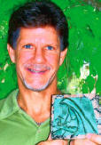
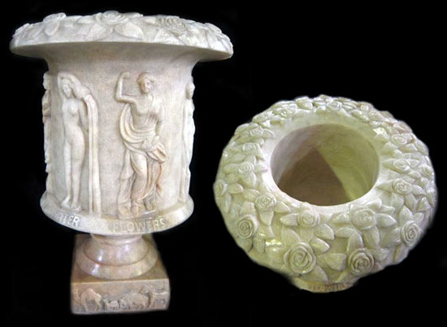

|
Press Releases
|

Sean Colson
S E P T E M B E R
2 0 0 9
S T Y L E M
A G A Z I N E
Sarasota
|
Talk about all in the family. Sean
Colson’s father, Frank Colson, is a
renowned sculptor and instructor.
His mother, Diana Colson, is a
writer, composer and filmmaker. Sean
grew up in Sarasota. After
graduating from Sarasota High School
in 1979, he started a bronze casting
supply business and a bronze
foundry. He reproduces, repairs and
restores historic Sarasota statuary,
and also designs original works
using bronze and other materials. He
and his wife, Marina, offer art and
cultural tours around the world.
I hear you started making art an
early age. I sold my first
illustration for a nickel in 1965.
Within an hour, I sold five
drawings, just enough to buy a
Matchbox car. Before the summer was
over, I was able to purchase a fleet
of cars. Two years later, at 7, I
participated in a father-and-son
exhibition in Sarasota — and John D.
MacDonald purchased one of my
drawings!
How would you describe your latest
art? It’s pretty much the
same style as when I was a kid:
comical, playful, imaginative
fantasy figures and machines.
How did you become interested in
working in bronze? I
started manipulating clay and wax as
a child. My father had — and still
has — a ceramic and bronze-casting
studio next to our house. When I was
little, I played with these
materials. As I grew older, I helped
my father with his work and learned
to cast my own pieces, refining my
style along the way. In Elizabethan
times, I would have been considered
a boy apprentice. Are you
involved in any public art projects?
I cast large bronzes for projects
created by other artists in the
United States and Canada. Most
recently, I helped design the
Ringling Isles statuary urn
commemorating John Ringling.
Your wife, Marina, is also an
artist. How does that work?
We call ourselves the “togetherness
team.” We collaborate really well
together.
What are your principal artistic
influences? Dr. Seuss, the
movies “Chitty-Chitty Bang Bang” and
“Yellow Submarine,” and the town of
Woodstock, N.Y. What are your goals
for Sarasota this coming season? I
hope to have an exhibition of small
bronze sculptures. I’m also striving
to finish text and drawings for two
books, “The Book of Love and Peace”
and “Baby, Peace!” (Sample drawings
can be seen at
www.ColsonCreations.com.) I also
plan on offering classes in creating
bronze sculpture.
Click here to
see .pdf |
|
|

|
|
|
|
Thursday, April 16,
2009
Feature Story
Sean Colson

Sean Colson
was raised in the
Sarasota art scene. Born
in Tallahassee, his
parents brought him to
Sarasota at the age of
four. The year was 1964,
and the family had
purchased the original
home of famed
watercolorist Hilton
Leech because it came
with a licensed art
studio on the property.
His father, sculptor
Frank Colson, soon set
up Colson School of Art
on Hillview Street.
By age five, Sean and
his brother Kevin were
making illustrations and
drawings of cars and
selling them in the
front yard for 5 cents
apiece. As time
progressed, Sean's
father gave him many
opportunities to express
the artistic side of his
character. His mother,
Diana, showed him the
world of the performing
arts; she taught music
at Southside Elementary
and used her summers to
create short films in
various countries of the
world.
As Sean's art
progressed, he moved
from drawing cars to
people. At nine years
old, Sean had his first
art exhibit, a Father &
Son Show at the Hilton
Leech Art gallery in
Sarasota, where his
drawings were purchased
by such luminaries as
famed author John D.
MacDonald and
photographer Jan
Silberstein.
Throughout the ‘60s, his
father held summer art
workshops in places like
Canada and North
Carolina, Maine and
Mexico. These
environments filled Sean
with creative energy,
and he gradually moved
from drawing into
sculpture. He first
began working with clay,
making ceramic art
tiles, then evolved into
creating whimsical
bronze sculptures, These
small bronzes featured
imaginative things such
as cowboys riding
dolphins and whales
morphing into jet
airplanes.
In 1970 and 1971 the
family traveled around
the world for fourteen
months, with his mother
making short 16mm films
for schools and
libraries. Sean would
star in one movie while
his brother would star
in the next. During
their extended travels,
they made films in
Kyoto, Hong Kong,
Sydney, Bali, Bangkok,
Katmandu and Old Delhi.
Sean and Kevin also
attended school in
Queensland, Australia
while their father
opened a bronze
sculpture foundry. Upon
leaving Australia, the
family traveled overland
from Nepal to London and
then back to the U.S.
After graduating from
Sarasota High School in
1979, Sean started his
bronze casting supply
business
www.Shellspen.com.
He took a few college
courses, but left school
to partner with his
father in the bronze
foundry business in what
is now Sarasota's
Historic Rosemary
District. In the late ‘80s
he and his brother
joined forces with Drew
Truitt in a new business
in downtown Sarasota
called Colson Originals.
Here they reproduced
historic statuary for
the streets of Sarasota.
In the early ‘90s, Sean
moved to Central Studios
on Central Avenue,
helping to develop an
enclave of local
artists. Here, he
continued to reproduce
historic Sarasota
statuary, and had a
visit from a relative of
Charles Ringling which
motivated him to expand
his line. The Ringling
Museum hired him to work
on repairing many of
their weathered pieces,
and he also worked with
his father on
maintenance of metal
sculptures belonging to
the City of Sarasota.
This year, Sean
introduced Sarasota's
Ringling Isles Urn, a
piece which he and Ed
Pinto designed to
commemorate Sarasota's
rich history with John
Ringling. This stunning
piece is hand carved in
marble and is available
to order. It can be seen
at Sean's art website:
www.ColsonCreations.com
Whether it's bronze
casting, statuary,
illustrations, art
travel or film,
Sean Colson
is very much the artist.
|
|
|
|
|
All
contents © 2009
ColsonCreations.com
|